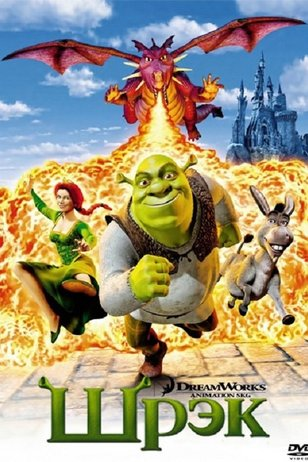
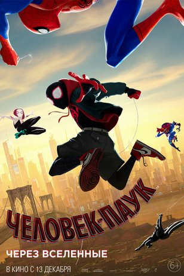

OSCAR
Жанр: Мультипликация с 1991г. по 2020г.


Название фильма
Год
Колличество оскаров
В мире животных
1991г
1
Красавица и чудовище
1992г
6
Алладин
1993г
5
Уоллес и Громит 2: Неправильные штаны
1994г
1
Покахонтас
1996г
2
Игра Джери
1998г
1
Тарзан
2000г
1
Шрэк
2002г
1
Унесенные призраками
2003г
1
В поисках Немо
2004г
1
Уоллес и Громит: Проклятие кролика-оборотня
2006г
1
Делай ноги
2007г
1
ВАЛЛ·И
2009г
1
Вверх
2010г
2
История игрушек: Большой побег
2011г
1
Ранго
2012г
1
Храбрая сердцем
2013г
1
Человек-паук: Через вселенные
2019г
1
История игрушек 4
2020г
1
Назад
Ильин Андрей Юрьевич ИКБО-20-19